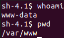

http://legalhackers.com/advisories/Nginx-Exploit-Deb-Root-PrivEsc-CVE-2016-1247.html
This is kind of vulnerability using NGINX and SUID.
The exploit is about the NGINX logs: with elevated privileges on logs
an attacker can escalate to root.
Most web servers are hosted as www-data user:

If we can try to run the Linux Exploit suggester:

We can check manually for the version of nginx with dpkg -l:

This exploit to work require the SUID on sudo:
We should check for it.

Let's get started.
In the log folder we have read, write and execute permission
First step is to check the nginx log files: we can see some related to root!

The logic is this:
we can create a symlink related to the log file, restart nginx and escalate!
Open the link and try to use the PROOF OF CONCEPT EXPLOIT


Last step is to restart nginx: